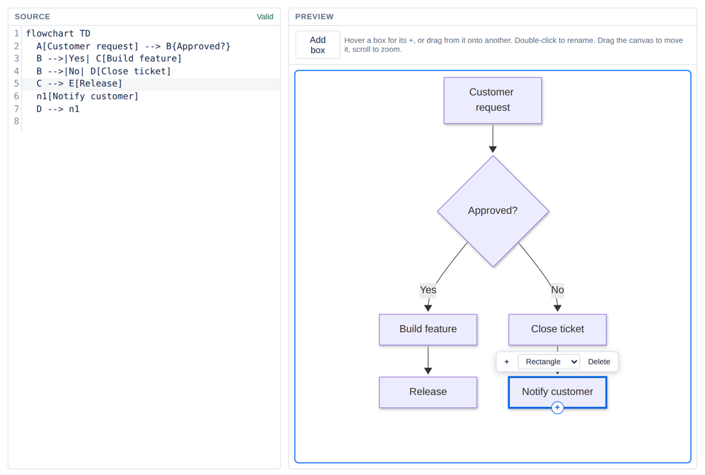

Flowcharts in Confluence, without drawing
Need a process flow, an approval path or a quick decision tree on a Confluence page? Mermaid Diagram Editor for Confluence builds it by clicking and lays it out for you. Free for up to 10 users.
Get it free on the Atlassian Marketplace
How it works
- Type
/mermaidon a page. A starter flowchart appears. - Click a box, then + to add the next step. Double-click a box to rename it. Turn a box into a diamond for a yes/no decision, and double-click an arrow to label it.
- Publish. The layout arranges itself, so the flow stays tidy when steps change.

Why it's simpler than a drawing tool
- Nothing to align. No positioning shapes or straightening arrows: boxes line up by themselves.
- It's also text. Every diagram is Mermaid code you can copy, review in page history, or generate with any AI and paste in.
- Big flows stay readable. Open any diagram full screen, zoom and pan.
- Nothing leaves Confluence. No account, no outside servers. The diagram lives in the page.

When a drawing tool is the better fit
Need icons, network maps, floor plans or exact positions? Use a free-form drawing app. This app is for flows: steps, decisions and arrows.
Questions
Is it free?
Free for Confluence Cloud sites with up to 10 users. Larger sites get a 30-day free trial, then a paid plan.
Does it work on Confluence Data Center or Server?
No, Confluence Cloud only.
Can I edit other diagram types by clicking?
Clicking edits flowcharts. Sequence, ER and other Mermaid diagrams render on the page and are edited as text.
Where are my diagrams stored?
Inside the Confluence page, as Mermaid text. The app has no outside servers and needs no account.
Get it free on the Atlassian Marketplace
By Schneiderman Tech · Product overview · support@schneiderman.tech